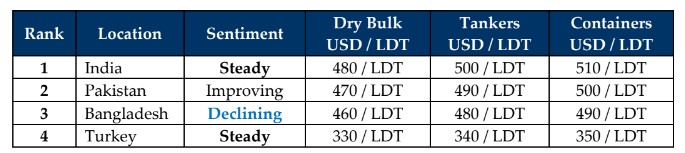

GMS Week 42 – WHAT TIME IS IT?!
in Weekly Demolition Reports 21/10/2024

The only uncertainty that prevails at this moment in time is just how soon the Middle East plunges deeper into war, dragging the rest of us and our lives with it? Covid logistical drawbacks created untold financial doom for the world economies, exacerbated by a vessel jamming up the Suez Canal to incessant delays over increasing strikes on merchant ships in the Red Sea lanes over the last year that have gotten increasingly worse over time, has everyone wondering just “what the time is”, given that this week, Yachir “Yahyah” Sinwar, the leader of Hamas, was killed in an encounter with the IDF that was followed by an Iranian counter-attack whereby a single missile drone was fired from Hezbollah territory in Lebanon that that struck PM Benjamin Netanyahu’s home in Northern Israel, invariably seeing Iran lay the groundwork for an inevitable war by striking the leader of a free nation. As U.S. Forces increase their attacks in Yemen targeting Houthi bases and Israel readies for its strike against Iran, surprisingly this week, crude oil dropped more than 8% in value since early September trading figures on the back of OPEC and the IEA (International Energy Agency) lowering their respective output forecasts, notwithstanding the unfolding crisis in the Middle East.
On the ship recycling front, weak pricing, damp demand, and dithered sentiments characterized another lackluster week in the Indian sub-continent, as sales grind to a virtual halt this week with activity registering at some of the lowest levels witnessed for nearly a decade. As levels declined by over USD 100/LDT since the peaks of 2024, a majority of the marginal sales are reliably taking place below USD 500/LDT on nearly all vessels and into all markets. Bangladesh & Pakistan remain at the bottom of the sub-continent rankings on account of economic deficiencies that are leaving available L/Cs starting to dither and a mounting disinterest to negotiate even when the opportunity arises, all whilst India pigeonholes its collection of HKC sales from the likes of MSC over the recent weeks even though highly sought after containers are below the USD 500/LDT mark on a delivered basis. Finally, Turkey on the far side remains marooned with weak sentiments, weaker supply, and a whole lot of lingering Lira and steel concerns of their own.
Speaking of, despite Indian and Pakistani currencies remaining relatively unchanged this week, both Bangladesh & Turkey recorded noteworthy declines this week. Even local steel plate prices flatlined in Bangladesh & Pakistan, with India partially mimicking their performances and Chinese plate continues to fall again. Could this result in further declining steel levels from India & Pakistan? Certainly, would be the case in India given that prevailing tariffs on cheaper Chinese steel are doing little to control the violence in Indian steel. Bangladesh too has yet to settle post PM Hasina, with the interim government yet to deliver any clear direction for the country or the economy, and this continues hampering the resale of recycled steel from local yards, further curtailing domestic output. Pakistan and Indian recyclers, plagues by h cheap Chinese steel over the past few months have themselves chosen to abstain from the buying, fearful of further market falls amidst the ongoing wars. As freight markets continue to perform unseasonably well – even if dry bulk has cooled off lately – it seems there will simply not be enough supply for the recycling markets through the remainder of the year – if not beyond well into Q1 2025. This may give sub-continent markets the time needed to stabilize, until the expected deluge of tonnage eventually transpires.
For Week 42 of 2024, GMS Market Rankings / vessel indications are as below.

📄 Download PDF: Ship-recycling-market-insight-Week-42-10-18-2024-What-Time-Is-It.pdfSource: GMS,Inc. https://www.gmsinc.net/gms_new/index.php/web
 Translate
Translate{kind=link}